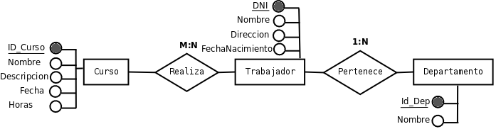

Una vez estudiada la teoría del análisis y el diseño de las bases de datos relacionales vamos a realizar una práctica guiada.
Partimos del siguiente problema:
En una empresa trabajan una serie de empleados, de los que conocemos su DNI, nombre, dirección, fecha de nacimiento y cursos que han realizado. De los cursos conocemos la descripción, el nombre, la fecha y las horas. Cada uno de los trabajadores pertenece a un único departamento de la empresa de los que conocemos simplemente su nombre. Además sabemos que no existe ningún trabajador independiente, es decir, todos los trabajadores pertenecen a algún departamento.
Paso 1: análisis del problema, comprensión del enunciado y extracción de las entidades y atributos.
En el siguiente párrafo se vuelve a repetir el enunciado del problema pero destacando las entidades y los atributos:
En una empresa trabajan una serie de empleados, de los que conocemos su DNI, nombre, dirección, fecha de nacimiento y cursos que han realizado. De los cursos conocemos la descripción, el nombre, la fecha y las horas. Cada uno de los trabajadores pertenece a un único departamento de la empresa de los que conocemos simplemente su nombre.
Paso 2: Selección de relaciones
Las relaciones que aparecen en el enunciado del problema son:
- Pertenece: esta relacion une las entidades Trabajador y Departamento. Su significado es que un trabajador pertenece a un departamento. Estudiando las cardinalidades tenemos que un trabajador pertenece a un único departamento y un departamento tiene varios trabajadores; por lo tanto la cardinalidad de esta relación es 1:N.
- Realiza: une las entidades Trabajador y Curso. Un trabajador puede realizar varios cursos y un curso puede ser realizado por varios trabajadores, luego la cardinalidad es M:N.
Paso 3: Creación del diagrama Entidad - Relación

Figura 2.3. Diagrama E-R problema guiado
Paso 4: Creación del modelo relacional
Este es el modelo que posteriormente será implementado en el SGBD.
- Tenemos las siguientes tablas:
Curso(ID_Curso, Nombre, Descripción, Fecha, Horas)
Trabajador(DNI, Nombre, Dirección, FechaNacimiento)
Departamento(Id_Dep,Nombre)
- Tenemos las siguientes relaciones:
M:N Aparece una nueva tabla cuyos atributos son los campos clave de las relaciones que une y la clave está formada por la unión de ambos, luego los dos aparecen subrayados.
Realiza(ID_Curso, DNI)
1:N No aparece una nueva tabla; en su lugar, la tabla asociada a la entidad que relaciona varios individuos a uno solo, aparece un nuevo atributo con la clave principal de la otra entidad.
Trabajador(DNI, Nombre, Dirección, FechaNacimiento, Id_Dep)